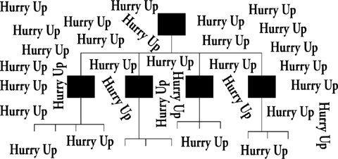

Training
I know, I know, this section should have gone in the previous chapter (“Where Learning Happens”), not this one, which is about nonlearning. In fact, you’re probably wondering, What’s the matter with this DeMarco guy anyway, not having a section on training in that chapter? Isn’t training the way that organizations learn?
My point in placing it here is that training, as normally conducted in the slackless organization, is a nonlearning technique.
Before making that point explicitly, let me describe to you an ideal training situation, one that is highly likely to result in learning. Imagine that you are a beginning piano player, just showing up for your first lesson. Ms. Melodie, your teacher, tells you that you’re going to begin by working on the Malagueña Suite. “Whoa, ” you respond, “I have only these ten fingers.” You wiggle them helpfully to make the point. “No way I am going to be able to play Malagueña.” “That’s okay, ” she tells you, “we’re going to take it extremely slowly.” And so you begin. She has you play the first phrase at one-tenth the speed that a concert pianist would play it. And then you go back over it again and again till you’ve got your fingers pretty much trained, not to “play the piano,” but to play that one phrase. Then you move on to the next.
My point is that the essence of a training experience is this slowing down. (Learning takes time.) It is the very defining characteristic of training.
Training = practice by doing a new task much more slowly than an expert would do it
Any so-called training experience that lacks the slow-down characteristic is an exercise in nonlearning.
Most corporate training fits easily into this category. You are given an input-only stage in which you ingest some new idea or approach, and then a performance stage in which you practice it. Only you don’t get to practice it at a tenth the speed (or even nine-tenths the speed) that an expert would do it. Rather, you are expected to practice at expert speed. Armed with the new (untried) technique, you are supposed to do the same work you did the old way in less time than it used to take you. That, the training department will tell you, is the reason you were trained in the new technique: so you could be more efficient.
Chances are you’ve been guilty of “training” people this way yourself. Have you ever assigned a new (first-time) manager to a project and allocated about the same time for him or her to bring the project home that it would have taken had you run it yourself? I’ve done that. If I could have managed the project myself in a year, I would expect the first-time manager to have it done in a year as well. I don’t know what I thought I was doing, but it sure wasn’t training. If I’d wanted to train that manager, I should have given him/her twenty-four months or more to do the job. I should have insisted that the project be run with fewer people than I’d have assigned to it had I been the project manager. With fewer people on board, the new manager would have an easier time grasping the lessons offered up by the experience.
There is no training without an extended period of practicing at a much slower-than-expert rate. In today’s Hurry Up corporation, that usually means there is no training. Real training is starkly at odds with Hurry Up. And the Hurry Up message is everywhere; it pervades the organization like wallpaper.

This, too, can be viewed as a problem of the white space: It’s too dangerous to navigate and too full of the Hurry Up message to serve for the communication of anything else.